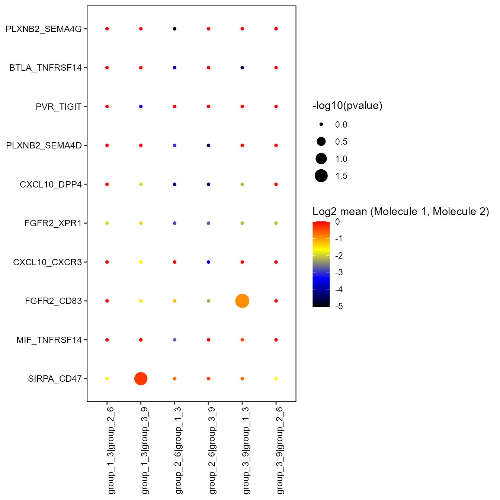

vignettes/CellPhoneDB.Rmd
CellPhoneDB.RmdThe Platypus family of packages are meant to provide potential pipelines and examples relevant to the broad field of computational immunology. The core set of functions can be found at https://github.com/alexyermanos/Platypus and examples of use can be found in the publications https://doi.org/10.1093/nargab/lqab023 and insert biorxiv database manuscript here
Stay tuned for updates https://twitter.com/AlexYermanos
CellPhoneDB is a repository of curated receptors, ligands and their
interactions and includes tools which identify and analyse interactions
between a given pair of cells from single cell RNA sequencing data. We
have developed a pipeline for the implementation and adaptation of
CellPhoneDB functons in the Platypus package that can be used directly
on the GEX output of VDJ_GEX_matrix function.
More specifically, CellPhoneDB_analyse is a function that allows the
user to organize the data so that it can be read and processed by
CellPhoneDB. The results of the analysis are then saved in a directory
“out” and are also added in a new vgm list item (CellPhoneDB). The
function requires prior installation of Python on the computer and the
running time can take several minutes.
library(Platypus)
#download raw data
yermanos2021_raw <- PlatypusDB_fetch(PlatypusDB.links =
"yermanos2021b/ALL/ALL", load.to.list = T)
#convert it into vgm object
vgm <- VDJ_GEX_matrix(Data.in = yermanos2021_raw,
GEX.integrate = T,
VDJ.combine = T,
integrate.GEX.to.VDJ = T,
integrate.VDJ.to.GEX = T,
verbose = FALSE)The output of the VDJ_GEX_matrix is the main object for all downstream functions in Platypus, as well as CellPhoneDB. We can create this directly into the R session by using the public data available on PlatypusDB. ADD DATASET DESCRIPTION.
Requirement for the following is the installation of Python 3 on the local computer. The CellPhoneDB_analyse function takes the VDJ_GEX_matrix function output as first input parameter (vgm.input). The second input parameter (column) selects the column of the vgm object that is used for filtering the groups/pairs to be analysed, with the name of these being specified by the third input parameter (groups). The fourth input parameter (organism) indicates the organism the data is from. If this is set to “mouse”, the function converts the gene names into humanised ones, because CellPhoneDB can only be applied to human genes. The other input parameters are CellPhoneDB specific arguments and allow the user to modify some analysis parameters, such as the gene identity, the results precision, the possibility of subsampling the cells, the p-value threshold and other.
vgm_cellphonedb<-CellPhoneDB_analyse(vgm.input = vgm, #the function takes vgm as an input
column = "seurat_clusters", #column name of vgm[[2]] where the groups to be tested for interactions are located
groups= c(3, 6, 9), #Vector with groups of interest in the indicated column
organism = "mouse", #if == "mouse" the function needs to convert the gene's name, By default "human"
##the next argumemts are the CellPhoneDB specific method arguments
gene.id = "ensembl", #possible arguments: "ensembl" , "hgnc_symbol", "gene_name". By default "ensembl"
analysis.method ="statistical_analysis", #possible arguments: "statistical_analysis", in the future also "degs_analysis" . By default "statistical_analysis"
project.name = "subsampled", #Name of the project. If specified, a subfolder with this name is created in the output folder
iterations =1000, #Number of iterations for the statistical analysis. By default 1000
threshold = 0.2, #% of cells expressing the specific ligand/receptor. By default not specified. Range: 0<= threshold <=1.
result.precision = 2, #Number of decimal digits in results. By default 3
subsampling = TRUE, #If set to TRUE it enables subsampling. By default == FALSE
subsampling.num.pc =100, #Subsampling NumPC argument (number of PCs to use). By default 100, if subsampling == TRUE
subsampling.num.cells = 150, #Number of cells to subsample to. By default 1/3 of cells, if subsampling == TRUE.
subsampling.log = FALSE, #If set to TRUE it enables subsampling log1p for non log-transformed data inputs. Mandatory with no default, if subsampling == TRUE.
## statistical method arguments
pvalue = 0.05, #P-value threshold. By default 0.05.
debug.seed = -1, #Debug random seed -1. To disable it please use a value >=0. By default -1
threads = -1, #Number of threads to use. >=1. By default -1
install.cellphonedb =FALSE, #Boolean argument that installs the CellPhoneDB Python package if set ==TRUE. By default FALSE.
platypus.version = "v3",
pre.code = "conda init cmd.exe && activate cpdb")CellPhoneDB_analyse adds the list item $CellPhoneDB to the VGM as the 10th element of the VGM object.
names(vgm_cellphonedb)## [1] "VDJ" "GEX" "VDJ.GEX.stats" "Running params"
## [5] "sessionInfo" "" "" ""
## [9] "" "CellPhoneDB"CellPhoneDB is a list where the results and plots of the CellPhoneDB analysis are stored, with the following names:
names(vgm_cellphonedb$CellPhoneDB)## [1] "deconvoluted" "means" "significant.means"
## [4] "pvalues" "interaction.count" "count.network"
## [7] "heatmap_log_count" "heatmap_count" "dot_plot"The analysis results are summarised in .txt files in the current directory of the user and saved in the form of data.frame in CellPhoneDB.
More specifically, the “means” data.frame contains mean values for each ligand-receptor interaction.
head(vgm_cellphonedb$CellPhoneDB$means)## id_cp_interaction interacting_pair
## 1 CPI-CS0C6F86DF5 2arachidonoylglycerol_byDAGLA_CNR2
## 2 CPI-CS030959ED1 2arachidonoylglycerol_byDAGLB_CNR2
## 3 CPI-CS045C37E64 2arachidonoylglycerol_byDAGLA_GPR55
## 4 CPI-CS01F7D06F1 2arachidonoylglycerol_byDAGLB_GPR55
## 5 CPI-SC06D7BD0F6 FN1_integrin_aVb3_complex
## 6 CPI-SC07763D025 LAMC1_integrin_aVb3_complex
## partner_a partner_b
## 1 complex:2arachidonoylglycerol_byDAGLA simple:P34972
## 2 complex:2arachidonoylglycerol_byDAGLB simple:P34972
## 3 complex:2arachidonoylglycerol_byDAGLA simple:Q9Y2T6
## 4 complex:2arachidonoylglycerol_byDAGLB simple:Q9Y2T6
## 5 simple:P02751 complex:integrin_aVb3_complex
## 6 simple:P11047 complex:integrin_aVb3_complex
## gene_a gene_b secreted receptor_a receptor_b
## 1 ENSG00000188822 True False True
## 2 ENSG00000188822 True False True
## 3 ENSG00000135898 True False True
## 4 ENSG00000135898 True False True
## 5 ENSG00000115414 True False False
## 6 ENSG00000135862 True False False
## annotation_strategy is_integrin group_1_3.group_1_3 group_1_3.group_2_6
## 1 curated False 0.02 0.00
## 2 curated False 0.04 0.00
## 3 curated False 0.19 0.07
## 4 curated False 0.21 0.10
## 5 curated True 0.00 0.00
## 6 curated True 0.26 0.00
## group_1_3.group_3_9 group_2_6.group_1_3 group_2_6.group_2_6
## 1 0.00 0.02 0.00
## 2 0.00 0.03 0.00
## 3 0.07 0.19 0.08
## 4 0.10 0.19 0.08
## 5 0.00 0.00 0.00
## 6 0.28 0.05 0.00
## group_2_6.group_3_9 group_3_9.group_1_3 group_3_9.group_2_6
## 1 0.00 0.00 0.00
## 2 0.00 0.02 0.00
## 3 0.08 0.00 0.00
## 4 0.08 0.19 0.08
## 5 0.00 0.10 0.00
## 6 0.07 0.13 0.00
## group_3_9.group_3_9
## 1 0.00
## 2 0.00
## 3 0.00
## 4 0.08
## 5 0.12
## 6 0.14The “deconvoluted” data.frame gives additional information for each of the interacting partners. This is important as some of the interacting partners are heteromers.
head(vgm_cellphonedb$CellPhoneDB$deconvoluted)## gene_name uniprot is_complex protein_name complex_name
## 1 DAGLA Q9Y4D2 True DGLA_HUMAN 2arachidonoylglycerol_byDAGLA
## 2 DAGLA Q9Y4D2 True DGLA_HUMAN 2arachidonoylglycerol_byDAGLA
## 3 DAGLB Q8NCG7 True DGLB_HUMAN 2arachidonoylglycerol_byDAGLB
## 4 DAGLB Q8NCG7 True DGLB_HUMAN 2arachidonoylglycerol_byDAGLB
## 5 UBASH3B Q8TF42 True UBS3B_HUMAN Dehydroepiandrosterone_bySTS
## 6 DHCR7 Q9UBM7 True DHCR7_HUMAN Desmosterol_byDHCR7
## id_cp_interaction group_1_3 group_2_6 group_3_9
## 1 CPI-CS0C6F86DF5 0.02 0.03 0.00
## 2 CPI-CS045C37E64 0.02 0.03 0.00
## 3 CPI-CS030959ED1 0.07 0.03 0.03
## 4 CPI-CS01F7D06F1 0.07 0.03 0.03
## 5 CPI-CS09B8977D7 0.07 0.00 0.15
## 6 CPI-CS086D3E39F 0.08 0.07 0.16The “pvalues” and “significant.means” data.frames are the output of the statistical inference analysis and they report the values of the significant interactions.
head(vgm_cellphonedb$CellPhoneDB$significant.means)## id_cp_interaction interacting_pair partner_a partner_b
## 1 CPI-SS0E9A581F8 ICAM1_ITGAL simple:P05362 simple:P20701
## 2 CPI-SS09C4FCB90 ICAM1_SPN simple:P05362 simple:P16150
## 3 CPI-SS09808DEAE CD74_APP simple:P04233 simple:P05067
## 4 CPI-SS061A7E099 CD55_ADGRE5 simple:P08174 simple:P48960
## 5 CPI-SS0339AE950 SIRPA_CD47 simple:P78324 simple:Q08722
## 6 CPI-SS00D9A0644 FGFR2_CD83 simple:P21802 simple:Q01151
## gene_a gene_b secreted receptor_a receptor_b
## 1 ENSG00000090339 ENSG00000005844 False True True
## 2 ENSG00000090339 ENSG00000197471 False True False
## 3 ENSG00000019582 ENSG00000142192 False True False
## 4 ENSG00000196352 ENSG00000123146 True True True
## 5 ENSG00000198053 ENSG00000196776 False True True
## 6 ENSG00000066468 ENSG00000112149 True True True
## annotation_strategy is_integrin rank group_1_3.group_1_3 group_1_3.group_2_6
## 1 curated False 0.111 0.43 NA
## 2 curated False 0.111 NA NA
## 3 curated False 0.111 NA NA
## 4 curated False 0.111 NA NA
## 5 curated False 0.222 0.63 NA
## 6 InnateDB-All False 0.222 0.55 NA
## group_1_3.group_3_9 group_2_6.group_1_3 group_2_6.group_2_6
## 1 NA NA NA
## 2 0.31 NA NA
## 3 2.64 NA NA
## 4 NA NA NA
## 5 0.77 NA NA
## 6 NA NA NA
## group_2_6.group_3_9 group_3_9.group_1_3 group_3_9.group_2_6
## 1 NA NA NA
## 2 NA NA NA
## 3 NA NA NA
## 4 NA 0.51 NA
## 5 NA NA NA
## 6 NA 0.52 NA
## group_3_9.group_3_9
## 1 NA
## 2 NA
## 3 NA
## 4 NA
## 5 NA
## 6 NA
head(vgm_cellphonedb$CellPhoneDB$pvalues)## id_cp_interaction interacting_pair
## 1 CPI-CS0C6F86DF5 2arachidonoylglycerol_byDAGLA_CNR2
## 2 CPI-CS030959ED1 2arachidonoylglycerol_byDAGLB_CNR2
## 3 CPI-CS045C37E64 2arachidonoylglycerol_byDAGLA_GPR55
## 4 CPI-CS01F7D06F1 2arachidonoylglycerol_byDAGLB_GPR55
## 5 CPI-SC06D7BD0F6 FN1_integrin_aVb3_complex
## 6 CPI-SC07763D025 LAMC1_integrin_aVb3_complex
## partner_a partner_b
## 1 complex:2arachidonoylglycerol_byDAGLA simple:P34972
## 2 complex:2arachidonoylglycerol_byDAGLB simple:P34972
## 3 complex:2arachidonoylglycerol_byDAGLA simple:Q9Y2T6
## 4 complex:2arachidonoylglycerol_byDAGLB simple:Q9Y2T6
## 5 simple:P02751 complex:integrin_aVb3_complex
## 6 simple:P11047 complex:integrin_aVb3_complex
## gene_a gene_b secreted receptor_a receptor_b
## 1 ENSG00000188822 True False True
## 2 ENSG00000188822 True False True
## 3 ENSG00000135898 True False True
## 4 ENSG00000135898 True False True
## 5 ENSG00000115414 True False False
## 6 ENSG00000135862 True False False
## annotation_strategy is_integrin group_1_3.group_1_3 group_1_3.group_2_6
## 1 curated False 1 1
## 2 curated False 1 1
## 3 curated False 1 1
## 4 curated False 1 1
## 5 curated True 1 1
## 6 curated True 1 1
## group_1_3.group_3_9 group_2_6.group_1_3 group_2_6.group_2_6
## 1 1 1 1
## 2 1 1 1
## 3 1 1 1
## 4 1 1 1
## 5 1 1 1
## 6 1 1 1
## group_2_6.group_3_9 group_3_9.group_1_3 group_3_9.group_2_6
## 1 1 1 1
## 2 1 1 1
## 3 1 1 1
## 4 1 1 1
## 5 1 1 1
## 6 1 1 1
## group_3_9.group_3_9
## 1 1
## 2 1
## 3 1
## 4 1
## 5 1
## 6 1The “interaction.count” and “count.network” data.frames are generated when plotting the heatmap and they report the output network and the interactions count.
head(vgm_cellphonedb$CellPhoneDB$interaction.count)## X all_sum
## 1 group_1_3 18
## 2 group_2_6 1
## 3 group_3_9 12
head(vgm_cellphonedb$CellPhoneDB$count.network)## SOURCE TARGET count
## 1 group_1_3 group_1_3 8
## 2 group_1_3 group_2_6 0
## 3 group_1_3 group_3_9 10
## 4 group_2_6 group_1_3 0
## 5 group_2_6 group_2_6 0
## 6 group_2_6 group_3_9 1The plots obtained with the CellPhoneDB analysis results (heatmap_log_count, heatmap_count and dot_plot) are saved as .png files in the current directory and included in the list item CellPhoneDB as well and can be accessed as following. The dot_plot is not displayed because it is too big for the vignette.
vgm_cellphonedb[["CellPhoneDB"]][["heatmap_log_count"]]
vgm_cellphonedb[["CellPhoneDB"]][["heatmap_count"]]
#vgm_cellphonedb[["CellPhoneDB"]][["dot_plot"]]When more groups need to be compared, they can simply be included in the vector argument “groups”. Most function arguments have their default and do not need to be specified unless the user wants to modify the default parameters. The dot_plot is not displayed because it is too big for the vignette.
vgm_cellphonedb<-CellPhoneDB_analyse(vgm.input = vgm,
groups= c(1, 3, 6, 8, 9),
organism = "mouse"
)
vgm_cellphonedb[["CellPhoneDB"]][["heatmap_count"]]
vgm_cellphonedb[["CellPhoneDB"]][["heatmap_log_count"]]
#vgm_cellphonedb[["CellPhoneDB"]][["dot_plot"]]Since the Dot Plot obtained by CellPhoneDB analysis is particularly large and contains data that is non-relevant for visualisation purposes, the function dot_plot allows the user to customize the plot and create a reduced one, with only user-specified information. The user can select the rows and/or columns of interest to be plotted, as well as set a p-value/log2means threshold, according to which specific genes to plot are selected. Only genes that, for at least one interaction pair, fulfill the threshold criteria, are plotted.
interacting_genes<-c("PVR_TNFSF9", "PVR_CD96" , "PVR_CD226" , "PVR_TIGIT" , "CADM1_CADM1" ,
"TIGIT_NECTIN2" , "CD226_NECTIN2" , "COL6A6_a10b1 complex" , "FN1_a10b1 complex" , " COL6A1_a10b1 complex", "COL11A2_a10b1 complex" , "COL8A2_a10b1 complex" , "COL15A1_a10b1 complex" , "COL14A1_a10b1 complex" , "COL27A1_a10b1 complex" , "COL12A1_a10b1 complex" , "COL11A2_a1b1 complex" , "COL8A2_a1b1 complex" , "COL15A1_a1b1 complex" , "COL14A1_a1b1 complex" , "COL27A1_a1b1 complex" , "COL12A1_a1b1 complex" , " COL6A6_a2b1 complex" , "FN1_a2b1 complex" , "COL6A1_a2b1 complex" , "COL6A2_a2b1 complex" , "COL11A2_a2b1 complex" , "COL27A1_a2b1 complex" , "COL12A1_a2b1 complex" , "LAMC1_a2b1 complex" , "CDH1_a2b1 complex" , "FN1_aVb3 complex" , "LAMC1_aVb3 complex" , "FGF2_aVb3 complex" , "SPP1_aVb3 complex" , "THY1_aVb3 complex" , "MMP2_aVb3 complex" , "L1CAM_aVb3 complex" , "PLAUR_aVb3 complex" , "FN1_a4b1 complex" , "SPP1_a4b1 complex" , " PLAUR_a4b1 complex", "VCAM1_a4b1 complex","JAM2_a4b1 complex","FN1_a4b7 complex", "VCAM1_a4b7 complex" , "LIFR_OSM", "NKG2D II receptor_MICA","NKG2D II receptor_RAET1E","CCL24_CCR2", "CCL24_CCR3", "CCL3L1_CCR3", "CCL3L1_CCR1","CCL22_CCR4","CCL3L1_DPP4","CCL22_DPP4","CXCL10_DPP4" ,"CXCL10_CXCR3" , "CXCL13_CXCR5","PDGFB_LRP1", "MDK_LRP1", "SIRPA_CD47", "MDK_SORL1", "PDGFB_ADGRV1" , "XCL1_ADGRV1","EFNA5_EPHA7","GDF11_ANTXR1", "FGFR2_CD83" , "FGFR2_XPR1" , "PLXNB2_PTN", "PLXNB2_SEMA4D", "CD72_SEMA4D" ,"PLXNB2_SEMA4G" , "LTA_LTBR", "LTA_TNFRSF14", "TNFSF13_TNFRSF14", "CD160_TNFRSF14", "MIF_TNFRSF14", "BTLA_TNFRSF14", "TNFSF13_TNFRSF17", "TNFSF10_TNFRSF10D", "MIF_TNFRSF10D","GDF11_TGFR_AVR2A")
vgm_cellphonedb<-dot_plot(vgm.input = vgm_cellphonedb, #vgm where to save the dotplot
selected.rows= interacting_genes, #vector of rows to plot (interacting genes pairs). By default NULL.
selected.columns = c("group_1_3|group_2_6", "group_1_3|group_3_9", "group_2_6|group_1_3", "group_2_6|group_3_9", "group_3_9|group_1_3", "group_3_9|group_2_6"), #vector of columns (interacting group pairs). By default NULL.
threshold.type="log2means_topn", #thresholding criterion. By default NULL.
threshold.value=50, #Number of top values to select or value below (for pvalue)/above (for log2mean) which to select the genes. By default NULL.
project.name = "subsampled", #By default to NULL.
filename = "selection_plot.png", #name of the output file saved
height = 20, #height of the plot
width=8, #width of the plot
text.size = 9, #size of the text in the plot
return.vector=TRUE #Defaults to FALSE. If set to TRUE, it includes the vector of genes_pairs present in the dot_plot in the vgm CellPhoneDB list item.
)The resulting plot is saved in the current user directory in the subfolder of the output of the CellPhoneDB analysis, as well as in the vgm object as an additional list item of CellPhoneDB. If the user is interested in a specific interaction group pair only, this can be selected alone with the selected.columns argument.
vgm_cellphonedb$CellPhoneDB$selection_dot_plot
If selected rows/columns are not specified, all columns and rows are taken into consideration. In this case, results might appear more chaotic, especially with threshold.type=“pvalue” and threshold.type=“log2means”.
In order to get the vector of interacting genes pairs displayed in the dot_plot, one needs to set the argument “return.vector” to TRUE. The vector will be included in the vgm CellPhoneDB list item as $interacting_pairs and can be accessed as following:
vgm_cellphonedb[[10]]$interacting_pairs## [1] "SIRPA_CD47" "MIF_TNFRSF14" "FGFR2_CD83" "CXCL10_CXCR3"
## [5] "FGFR2_XPR1" "CXCL10_DPP4" "PLXNB2_SEMA4D" "PVR_TIGIT"
## [9] "BTLA_TNFRSF14" "PLXNB2_SEMA4G"Moreover, this argument can also be useful to have the vector of all the possible interacting gene pairs in the right format, choose the ones of interest and include them in the selected.rows parameter. This can be achieved by running the function without rows or threshold restriction and setting the argument return.vector to TRUE.
vgm_cellphonedb<-dot_plot(vgm.input = vgm_cellphonedb, return.vector=TRUE, project.name = "subsampled")
vgm_cellphonedb[["CellPhoneDB"]]$interacting_pairs[1:10]## [1] "2arachidonoylglycerol_byDAGLA_CNR2" "2arachidonoylglycerol_byDAGLB_CNR2"
## [3] "2arachidonoylglycerol_byDAGLA_GPR55" "2arachidonoylglycerol_byDAGLB_GPR55"
## [5] "FN1_integrin_aVb3_complex" "LAMC1_integrin_aVb3_complex"
## [7] "THBS1_integrin_aVb3_complex" "FCER2_integrin_aVb3_complex"
## [9] "FGF1_integrin_aVb3_complex" "PLAUR_integrin_aVb3_complex"